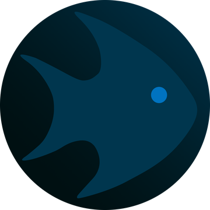

FishMMO
A modular, open-source MMO framework built on Unity 6.3 LTS, FishNet, QUIC/WebTransport, and PostgreSQL.
FishMMO is a complete multiplayer online game stack: a Unity client/server/shared codebase with a full prediction pipeline, transport-agnostic SRP-6a + TOTP authentication, a PostgreSQL data-access layer, QUIC-based networking, and the supporting web services, tooling, and bots needed to run and operate a persistent world. This site carries the hand-written guides for every part of it alongside generated API reference for every C# project, each page linked back to its source on GitHub.
Start Here
| Guide | What it covers |
|---|---|
| Introduction | What FishMMO is, the server topology, and the key design decisions behind it. |
| Getting Started | Prerequisites, database setup, building the native transport, and running the servers. |
| Connection Pipeline | End-to-end flow from client launch through authentication to gameplay. |
| Server Initialization Order | Complete boot sequence from MainBootstrap through to the running server. |
| Feature List | Everything the framework currently supports. |
Server Architecture
Three server roles, all launched from a single GameServer executable with a
command-line argument (LOGIN, WORLD, or SCENE):
| Role | Responsibility |
|---|---|
| LoginServer | Account creation, SRP-6a authentication, character select, TOTP 2FA. |
| WorldServer | World state, character routing, scene server orchestration. |
| SceneServer | Gameplay simulation per world scene — chat, combat, inventory, guilds. |
Projects
| Project | Description | Links |
|---|---|---|
| Unity | Client, server, and shared game code — full prediction pipeline, modular character visuals, threat-based AI, and the ECA trigger system. | Docs · API · Source |
| Auth | Transport-agnostic .NET authentication library: SRP-6a, X25519 ECDH, token auth, and TOTP two-factor authentication. | Docs · API · Source |
| Database | PostgreSQL data-access layer built on Entity Framework Core and Npgsql. | Docs · API · Source |
| Web Servers | ASP.NET Core web services — IPFetch, Patcher, and the WebGL static server. | Docs · API · Source |
| Shared Utility | Pure C# utility library shared between the client and server projects. | Docs · API · Source |
| Logger | Flexible logging library with file, email, and console backends. | Docs · API · Source |
| App Health Monitor | Daemon that monitors, auto-restarts, and health-checks server processes. | Docs · API · Source |
| Discord Bot | Discord bot bridging in-game chat with a Discord guild. | Docs · API · Source |
| Installer | Cross-platform .NET console tool that automates dependency installation. | Docs · API · Source |
| Patcher | Client-side updater that applies versioned patch files. | Docs · API · Source |
| Setup | Configuration templates — nginx.conf, server .cfg files, appsettings.json, and deploy hooks. | Docs · Source |
| Dependencies | Centralized NuGet dependency aggregator that copies DLLs into Unity. | Docs · Source |
| Web Transport | C++ native library wrapping MsQuic (QUIC/HTTP3), P/Invoked from C# as a FishNet transport plugin. | Docs · Source |
| CMS | ASP.NET Core account-management web API — registration, password and 2FA management, and admin account actions. Scaffold: routes exist, handlers are still TODO stubs. | Docs · API · Source |
API Reference
Generated class and method documentation for every C# project: